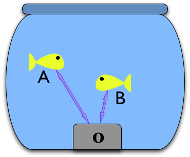

Goldfish A
This is a metaphorical goldfish.
Its name is A.
Goldfish B
This is another metaphorical goldfish.
Its name is B.
The bowl
A and B live in a metaphorical goldfish bowl.
Bowls and KBUS devices
Each metaphorical goldfish bowl has a KBUS device in it - this bowl has KBUS device 0:
The fish in their bowl
Here are the two fish in their bowl.
They are simple creatures
Metaphorical goldfish are simple creatures. They can only communicate with each other using KBUS messages.
Another bowl
Here is another metaphorical goldfish bowl. This one contains metaphorical goldfish called R and G.

But the fish are lonely
Unfortunately, A and B cannot communicate with R and G. Even if the two metaphorical goldfish bowls are running on the same computer, KBUS does not permit sending KBUS messages between different KBUS devices.
But luckily we have Limpets
A Limpet lives on the side of a metaphorical goldfish bowl, and communicates with another Limpet on another metphorical bowl:

What Limpets do
Limpets always come in pairs. Each Limpet can proxy KBUS messages from the KBUS device in its metaphorical goldfish bowl to and from the other Limpet in its pair. Think of them as using very low power line-of-sight lasers to send messages between each other.
So a pair of Limpets hide the fact that the two KBUS devices are not the same.
So our fish are less lonely
This means that fish A and G can talk just as if they were in the same bowl:
To the metaphorical goldfish, it is as if the messages magically pass between the two KBUS devices, and thus A and B can communicate with R and G.
Even with more bowls
This mechanism even allows such communication if there are intermediate bowls:
Keeping it simple
In order to keep Limpets and their implementation as simple as possible, we're willing to put up with some limitations.
Limitations: 1
Limpets come in pairs, and we're using sockets to communicate between them, so we put up with one Limpet in each pair being a server, and the other a client. This means we have to arrange for the server Limpet of a pair to start first.
Limitations: 2
All Limpets on a connected network shall have unique ids, enabling us to tell them apart. Requiring this allows us not to have some sort of name server.
Limitations: 3
Limpets may not be used to form a network with loops in it. This means that message propagation can be simplified (we don't have to worry about messages ending up in infinite resend loops).
Limitations: 4
We assume a "safe" or trusted network. Limpets do not provide any protection from other software "pretending" to be a Limpet (or, indeed, a KBUS kernel module!). This is appropriate for the types of use we envisage.
Limitations: 5
One cannot connect both ends of a Limpet pair to the same KBUS device (the same KBUS device number on different computers is OK, of course). Really, don't - bad things will happen. You don't want to know.
Limitations: 6 (sort of)
Oh, there is one other limitation. Neither KBUS nor Limpets address the message data, which is assumed to be safe for any host-to-network or network-to-host transitions.
As KBUS itself does not address the content of any message data (with the exception of Replier Bind Events, mentioned later on), Limpets also do not do anything special with KBUS message data (with the same exception). In particular, they do not do any host-to-network or network-to-host manipulation of message data.
This last may be lifted at some point in the future when ASN.1 bindings for KBUS data are provided (this is on our list), but for the moment if you are going to send messages between machines, assume that a text-based form (XML springs to mind) would be a good idea.